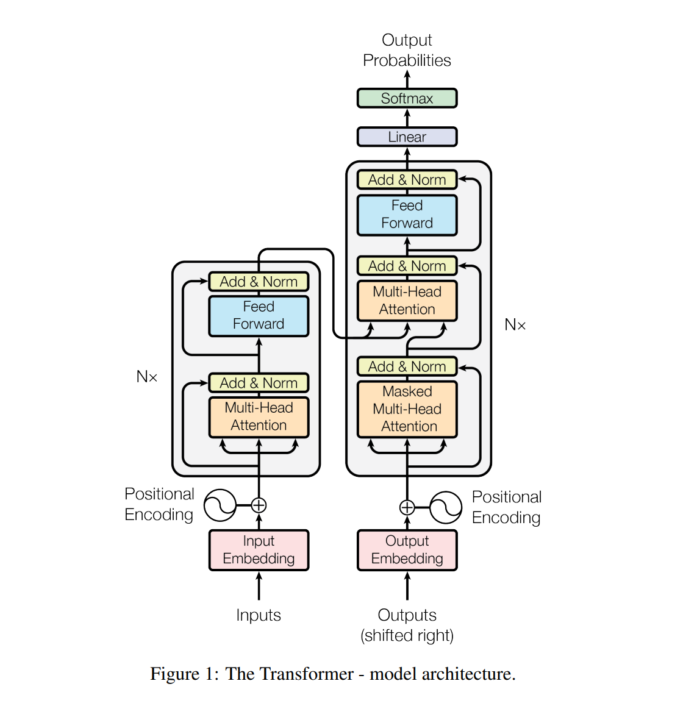

transformer笔记-1
self-attention
提出背景
动物需要在复杂环境下有效的关注值得注意的点，例如人们在阅读时，通常只有少量要被读取的词会被关注和处理。注意力机制的核心思想：决定需要关注输入的哪部分，分配有限的信息处理资源给重要的部分。
!
例如在图中，假设场景是桌面上有一个红色的咖啡杯，和四份黑白的文件，如果我们随意的看一眼过去，由于红色的咖啡杯在黑白文件旁边比较显眼，我们总是会不自觉的将注意力放到咖啡杯上。但是如果我们看过去之前，我们就心里想着要在桌上找一本书，那么虽然有可能下意识的被红色咖啡杯吸引，但是眼睛还是会很快聚焦到书上。
在此例子中，下意识地看向红色咖啡杯就称为非目的性线索，而在想要找书的时候看向书就称为目的性线索。在找书的过程中，虽然咖啡杯更加显眼，但是它对于我们这个过程并不重要，如果是用传统的卷积或者池化来处理，通常会找到咖啡杯，但是我们要找的是书，注意力机制就是在这种背景之下提出的。
非目的性线索：
不带有主观意图，通常是更关注比较特殊的，或者说比较显眼突出的。
目的性线索：
带有主观意图，通常是更关注比较重要的。
注意力层
卷积、全连接、池化层都是只考虑带有非目的性线索（表面看上去更突出、更显眼的内容），被称为键（key），而注意力机制是为了抓取在当前环境下的目的性提示，称为查询（query），输入的数据被称为值（value）
总的来说，如上图所示，注意力机制通过将查询（目的性线索）和键（非目的性线索）结合在一起，实现对值（输入数据）的选择倾向。
一般形式为：f(x) = α(query，key) * value
α(query, key) = softmax(a(query, key)) 称为注意力权重，就是对注意力分数经过softmax的结果
![image-20220930204005466]
a(query, key)称为注意力分数，实际意义是query和key的相似度。有两种计算方式。
加性attention：
学习参数：
学习参数如图是长度为h*k的矩阵Wk，维度为h*k的矩阵Wq，以及长度为h的向量Wv
在加性attention中，a(q,k)可以看作一个隐藏层大小为h的单隐藏层的输出维度为1的简单网络
乘性attention：
乘性attention又称点积attention，需要在q和k维度一样的情况下使用。
评分函数为
其中d为q与k向量内积的方差，起到一个normalization的作用。
自注意力机制
所谓self-attention自注意力机制就是query，key以及value都是由输入向量自身计算得来的
由于自注意力机制的序列关联最长路径最短，所以很适合长文本或者说长输入的数据，但与此同时它的计算复杂度是O(d * n^2)，计算复杂度和n是平方关系，所以如果处理长文本的话，计算代价很大，所以这是一个transformer比较流行的改进方向。
位置编码
由于self-attention没有记录位置信息，不能直接用来作时间序列的处理，需要加入位置编码。
假设输入表示X∈Rn×d .位置编码使用相同形状的位置编码矩阵 P∈Rn×d来输出一个X+P作为自编码的输入
如此编码的好处有1.计算更方便，可以直接加到输入数据上2.相比于传统的0-1二进制编码，长输入数据更节省空间。
多头注意力（multi-head attention）
由于在自注意力机制中，query、key、value都是由输入数据自身转换而来的，所以有一个缺陷是模型在对当前位置的信息进行编码的时，会过度的将注意力集中于自身的位置。多头注意力机制就是对于输入数据来说，采用h组query、key、value来计算注意力分数，通过多组计算得到多个注意力分数进行线性转换，对应着h个头连接后的结果，线性变换对应向量是学习参数。
通过重复h次投影到低维的过程，就是希望网络能学习到不一样的投影方式，使在投影的度量空间里去匹配到不同的模式，学习到更多的信息。
transformer

如上图是transformer原始的结构。transformer是基于encoder-decoder架构的模型。
encoder
其中encoder首先经过原始输入编码和位置编码组成了输入向量，encoder中有两个子层，其中一个子层经过多头自注意力层计算，再经过残差连接和layer-normalization运算得到结果。另一个子层是一个全连接前馈神经网络，也具有一个残差连接以及layer-normalization。
残差连接是为了解决多层深度模型中容易出现的梯度消失和梯度爆炸问题

normalization
decoder
在解码器中具有两个multi-head attention层，第一个采用了掩码操作，第二个multi-head attention层中的key和value使用encoder的输出，query使用掩码多头注意力层的输出。